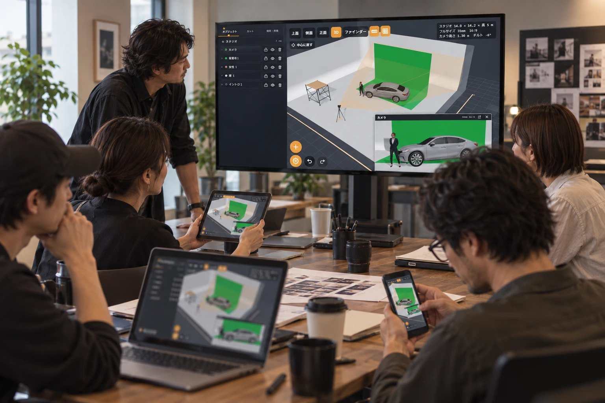
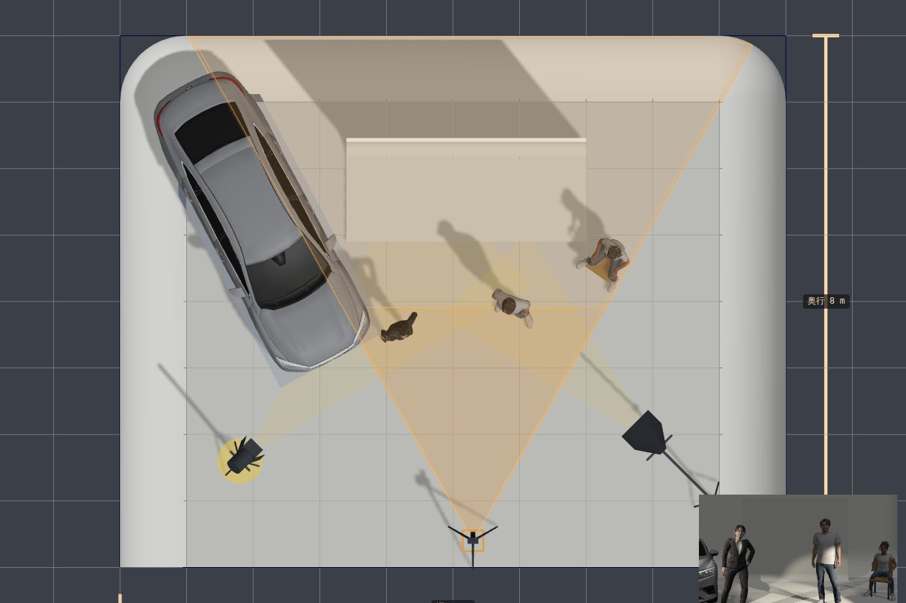
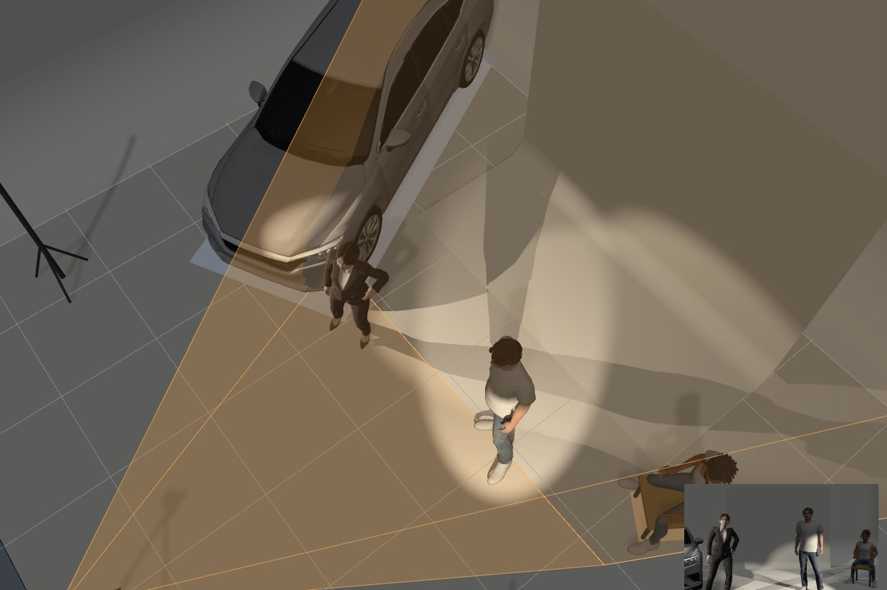
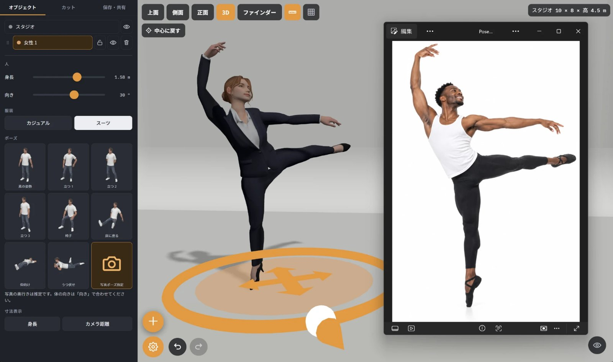
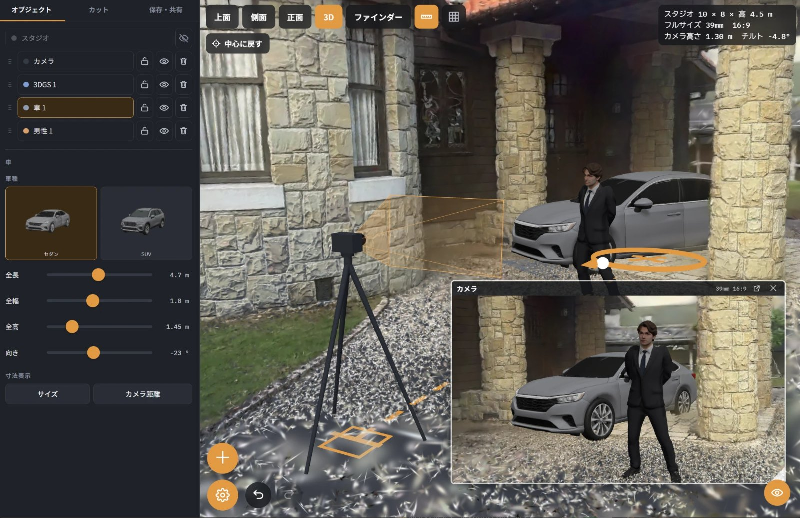
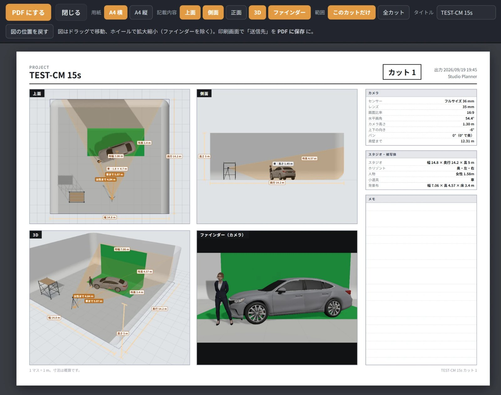
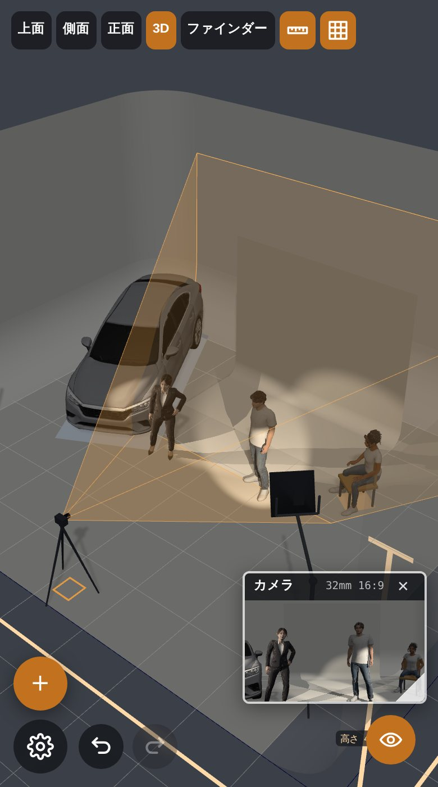

撮影プランを、気軽に、簡単に。
Studio Plannerは、撮影前の「これ大丈夫？」を簡単に確認できる無料サイトです。
スタジオの広さ、人物や機材の配置、カメラ画角まで、実寸ベースで確認できます。

打ち合わせを、もっと分かりやすく。
PPMや撮影打ち合わせで、レイアウトやカメラ位置、画角を共有。
言葉や図面だけでは伝わりにくい撮影イメージを、分かりやすく確認できます。
この広さで、本当に足りる？
人物、車、カメラ、照明などを実寸で配置。
カメラ位置やレンズも含めて、今回の撮影に必要なスタジオの広さを事前に確認できます。

背景や鏡、LEDの必要サイズは？
背景布やホリゾント、鏡、LEDウォールのサイズも実寸で確認。
実際のカメラ画角を見ながら、必要な背景の幅や高さを確認できます。
人物や機材も配置。
人物の身長やポーズを変更したり、ライト、スタンド、車、小道具などを配置できます。
GLB / FBX形式の3Dモデルにも対応しています。

写真でポーズ。
撮った写真の姿勢を、そのまま人物に反映できます。
手や指の形、顔の向きも読み取ります。

ロケ地も、持ち帰って検討。
Scaniverseなどでスキャンしたロケ地を読み込み、その中で撮影プランを検討できます。
ロケハン後に、カメラ位置やレンズを変えながらアングルを探すこともできます。

撮影プランを、そのまま資料に。
作成したプランは、図面やカメラ画角を含む資料として出力できます。
共有URLやQRコードを使って、同じプランを共有することもできます。

PCでも、タブレットでも、スマートフォンでも。
Studio Plannerは、PC・タブレット・スマートフォンからそのまま使えます。
インストールもアカウントも不要です。
